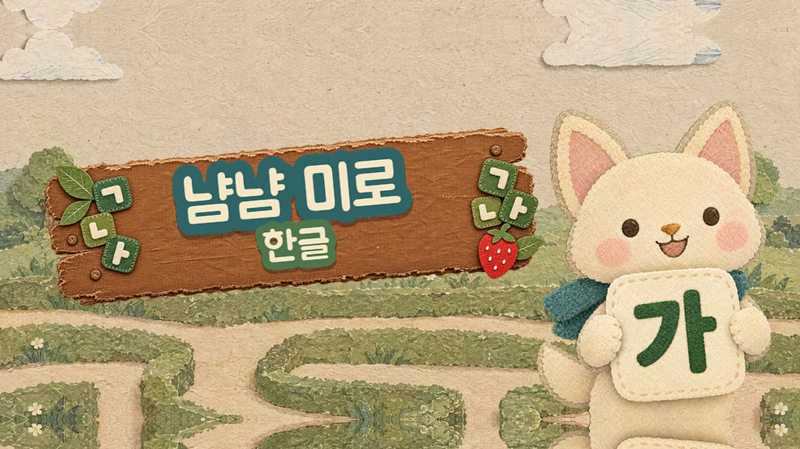

한글 · 영어 · 수학
한글 낱말 만들기, 영어 알파벳 낱말, 사칙연산까지. 세 가지 배움을 같은 미로 놀이로 익힙니다.

Overview
냠냠 미로는 아이가 손가락으로 주인공 '냠이'를 끌어 미로를 탐험하는 학습 퍼즐입니다. 길 위에 놓인 글자와 숫자를 순서대로 먹어 낱말이나 식을 완성하면 출구의 문이 열립니다.
찢은 종이를 붙여 만든 듯한 콜라주 그림책 화풍으로, 아이에게는 따뜻하고 부모에게는 안심이 되는 화면을 만들고 있습니다.
Key Features
한글 낱말 만들기, 영어 알파벳 낱말, 사칙연산까지. 세 가지 배움을 같은 미로 놀이로 익힙니다.
글자만 모으고 끝나지 않습니다. 판마다 낱말 그림 한 장과 그 그림에 맞는 문장을 함께 보여 줘, 뜻까지 자연스럽게 익힙니다.
초원 마을부터 수정 동굴, 사막, 빙하, 바다까지. 배경이 바뀌어도 미로는 언제나 또렷하게 읽히도록 그렸습니다.
두 글자 낱말에서 네 글자 낱말까지, 단계를 차근차근 올라갑니다. 매일 새로운 미션이 꾸준히 놀러 올 이유를 만들어 줍니다.
Gallery
개발 중인 게임 화면입니다. 이미지를 누르면 크게 볼 수 있습니다.